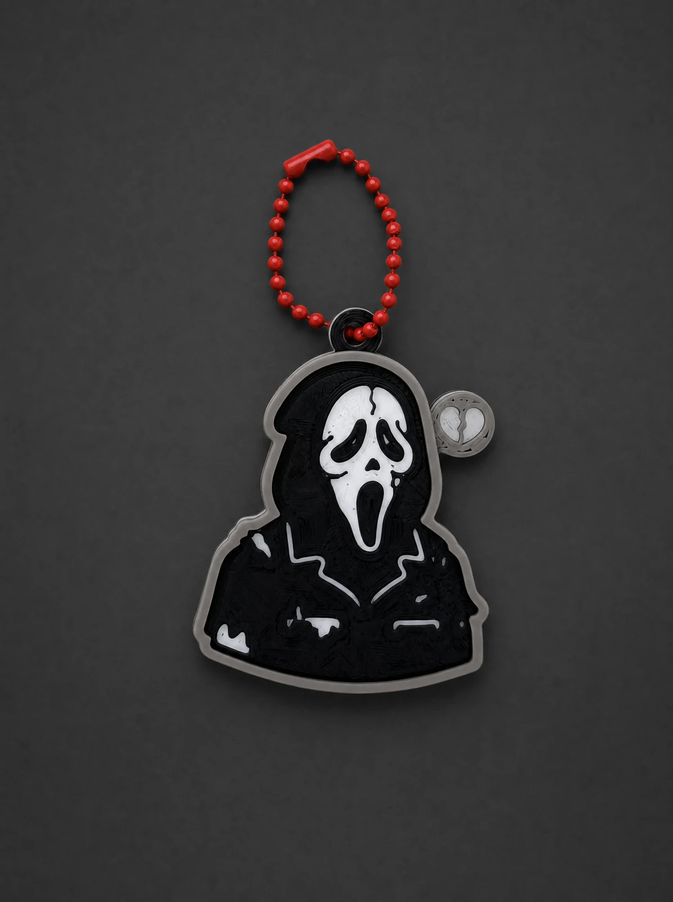
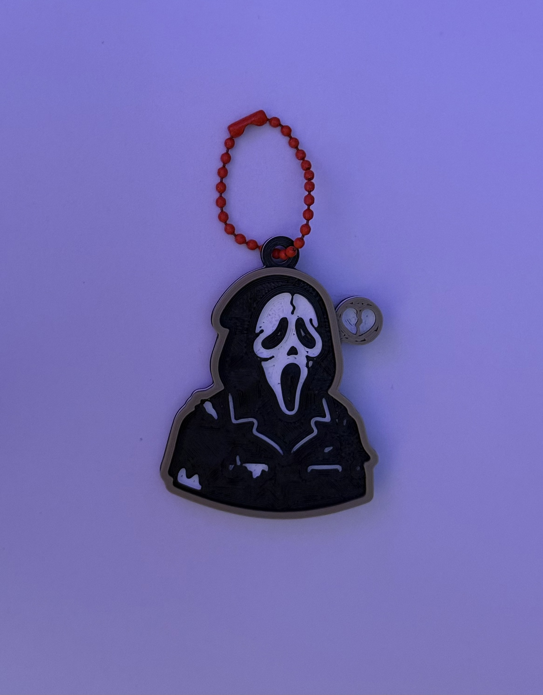

Unmistakable.
A black hood frames a striking white mask.
An unmistakable expression. Yours to carry.
AFTER DARK / GHOST MASK / HALF-BODY
One mask. A flash of red.
Make character part of your everyday.
An expression of your own, in black and white.
A little different. Every day.

PRODUCT VISUAL / STYLED IMAGETHREE DETAILS. ONE ATTITUDE.
A black hood frames a striking white mask.
An unmistakable expression. Yours to carry.
A red ball chain brings the monochrome to life.
One small detail. A character of its own.
A grey border traces the half-body silhouette.
Look closer. Let the surface tell its story.

AFTER DARK / PRODUCT NOTES
The film sets the mood. The photo shows the detail.
Refer to the original photograph for the actual appearance.
The film and styled product images are creatively treated. Settings, lighting and some visual details may differ from the physical item. Refer to the original photograph for its actual appearance.
This is a product showcase. Dimensions, materials, pricing and purchase information have not yet been published. Please confirm these details with the seller.
TAKE YOUR ATTITUDE WITH YOU.
GHOST MASK / HALF-BODY / AFTER DARK